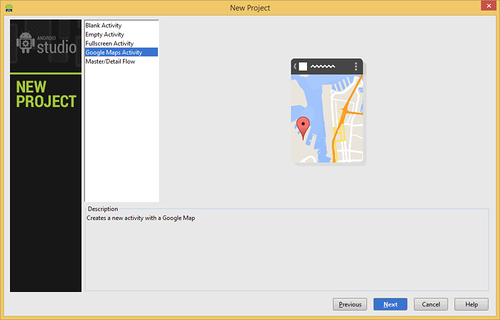
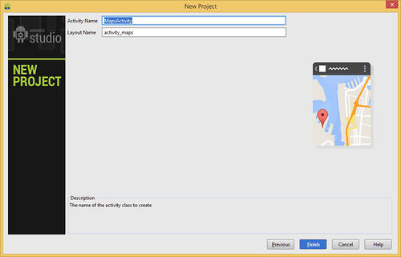
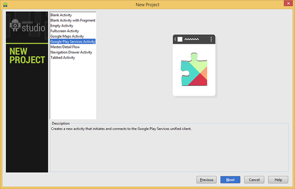

/* Моя кошка замечательно разбирается в программировании. Стоит мне объяснить проблему ей - и все становится ясно. */
John Robbins, Debugging Applications, Microsoft Press, 2000

/* Моя кошка замечательно разбирается в программировании. Стоит мне объяснить проблему ей - и все становится ясно. */
John Robbins, Debugging Applications, Microsoft Press, 2000
15 мая на конференции Google I/O 2013 объявили о новой среде разработки Android Studio. Основой для новой IDE стала платформа IntelliJ от компании JetBrains. У этой платформы было много поклонников, поэтому эта новость их сильно обрадовала. На данный момент это только бета-версия для тех, кто любит экспериментировать. Скачать новую среду разработки можно по адресу http://developer.android.com/sdk/installing/studio.html.
Основные особенности - реализована возможность вёрстки в реальном времени, доступно множество вариантов размеров и разрешений экранов. Присутствует раздел справки. Встроены инструменты улучшения качества приложений и монетизации. Имеются инструменты для отслеживания эффективности рекламных объявлений. Добавлено средство взаимодействия с бета-тестерами. И многое другое.
Процесс установки прост (далее мой опыт установки под Windows 8) - скачиваем программу и начинаем процесс установки. После окончания установки, если стоит соответствующий флажок, ждём запуска студии. Но ничего не запускается. Странно. Идем в папку, в которую устанавливали программу и пробуем запустить файл studio.exe Безрезультатно.
В интернете прочитал совет, который помог лично мне. Нужно прописать переменную среды окружения. В проводнике щёлкаем правой кнопкой мыши на значке Computer (у меня английская версия Windows 8) и выбираем Properties, чтобы открыть компонент панели управления System. В данном окне выбираем пункт Advanced system settings - откроется диалоговое окно, в котором нужно щёлкнуть на кнопке Environment Variables.... Откроется ещё одно диалоговое окно.
В секции System variables нажимаем на кнопку New... и добавляем в текстовое поле Variable name новое имя JAVA_HOME, а в текстовом поле Variable value добавляем путь к Java JDK - в моём случае это был C:\Program Files\Java\jdk1.6.0_39. После этого Android Studio запустился.
Если вы уже набили руку на разработке программы в Eclipse, то первые шаги будут знакомы, поменяется только внешний вид мастера создания нового проекта, а принцип остался прежним.
Рассмотрим по шагам. Процесс показан на версии 0.6.1
Запускаем Android Studio:
Выбираем новый проект и заполняем необходимые поля. Надо указать приложения в первом поле. Во втором следует указать домен компании. По умолчанию студия может подставить имя пользователя на компьютере. Лучше сразу изменить на удобное название, которое студия запомнит и будет подставлять в новых проектах. Поле Company Domain используется для формирования пакета (Package name) в перевёрнутом виде, как это принято в Java. Если вы не изменили имя домена, но имя пакета вас не устраивает, то можете нажать на кнопку Edit и отредактировать имя пакета.
Далее выбирается минимальный уровень для приложения. В предыдущем релизе по умолчанию использовался API для Android 2.2. И вот произошло знаковое событие. Теперь предлагают писать приложения сразу для Android 4.0.3. Конечно, вы можете выбрать из списка другой вариант.
Далее выбирается тип приложения. Для новичков следует выбирать вариант Blank Activity.
Последний шаг - выбираем имена для активности, разметки и заголовка. Здесь тоже произошли изменения. Раньше использовался вариант со словом "main" - MainActivity, activity_main.
(Так как потом студия обновляется и нет надобности ставить её с нуля, то я не знаю, осталось ли это в новых версиях). Далее на экране возник индикатор прогресса, который что-то загружал с использованием Gradle. Но индикатор висел на экране долго. Это было в старых версиях.
Удивило, что теперь не надо выбирать значок для программы. Ещё заметил, что в манифесте теперь убрали <uses-sdk></uses-sdk>. Теперь эти настройки хранятся в файлах Gradle.
Студия в последнее время постоянно меняет свой внешний вид. Оставлю на память.
Выбираем новый проект и заполняем необходимые поля.
Выбираем значок для программы:
Выбираем шаблон:
Настройки для активности:
Далее пошло новшество - на экране возник индикатор прогресса, который что-то загружал с использованием Gradle. Что это такое, я не знаю. Но индикатор висел на экране долго.
На этом процесс создания проекта был закончен. Сама среда разработки выглядела непривычно. Понадобится время на привыкание. Запустив проект, увидел, что запускается эмулятор, который был создан ещё через Eclipse.
На данный момент я слишком привык к Eclipse, поэтому пока не спешу переходить на Android Studio.
Чтобы перенести проект из Eclipse в Android Studio, эскпортируйте его в Eclipse через команду File | Export... и выберите в диалоговом окне папку Android, а затем пункт Generate Gradle built files. Затем вы можете импортировать проект в Android Studio.
Чтобы увидеть окно LogCat, нужно нажать комбинацию клавиш Alt+6. Также внизу есть маленькая кнопка с изображением зелёного робота и с текстом 6: Android. Странно, почему разработчики не поместили туда значок кота. Жалко что-ли.
Студия имеет встроенную поддержку просмотра и редактирования файлов формата Nine-patches (9.png).
В панели Android DDMS (Alt-6) есть кнопка для записи видео с экрана.
Начиная с версии 0.5.4, в Android Studio появился новый шаблон с использованием Гуглокарты - Google Maps Activity.


В версии 0.5.6 появились новые шаблоны Google Play Services Activity, Navigation Drawer Activity, Tabbed Activity.

В студии появился новый инструмент Navigation Editor, доступный через меню Tools | Android | Navigation Editor. Он позволяет быстро набросать макет из нескольких экранов и даже получить готовый код.
Небольшое описание, как пользоваться редактором, я выложил на Хабре.
Создание фрагментов в Android Studio
Android Studio: An IDE built for Android | Android Developers Blog
Android Studio Tips & Tricks: Moving Around
Adding a Backend to Your App In Android Studio